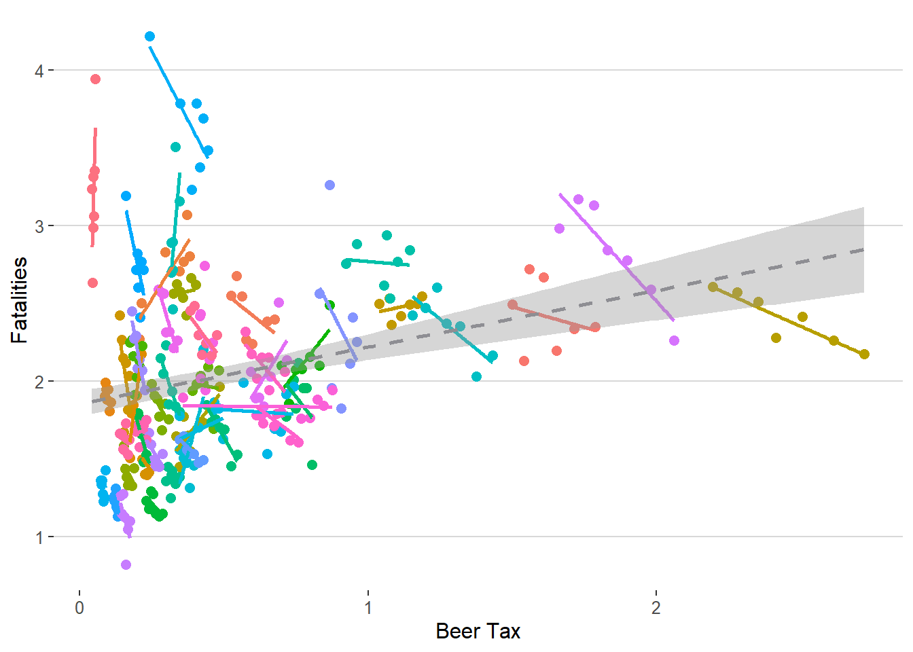
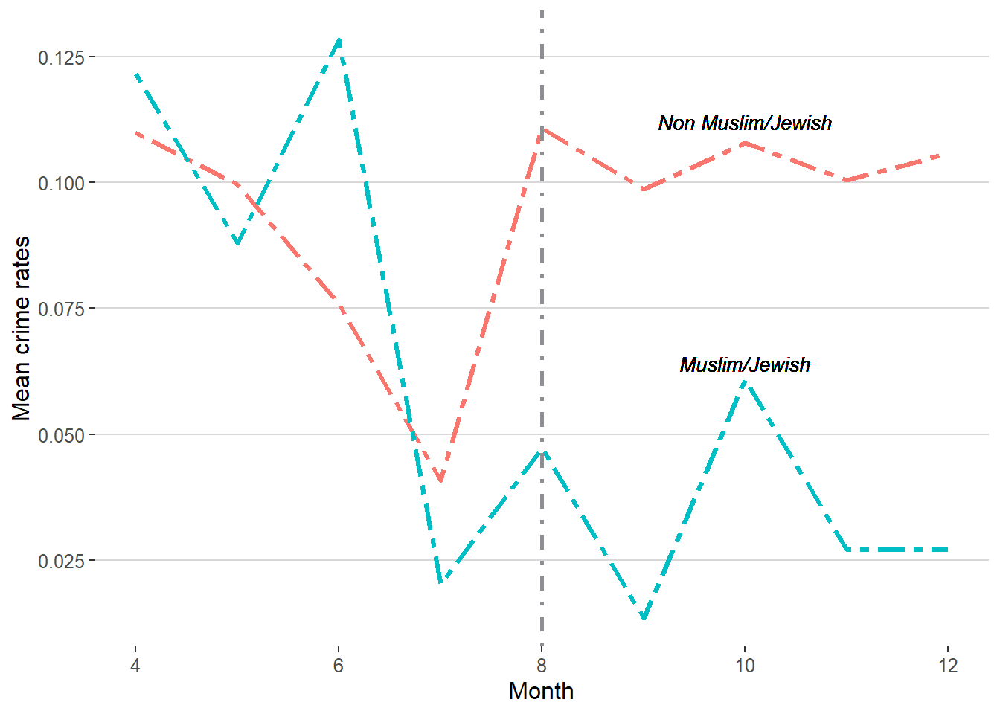
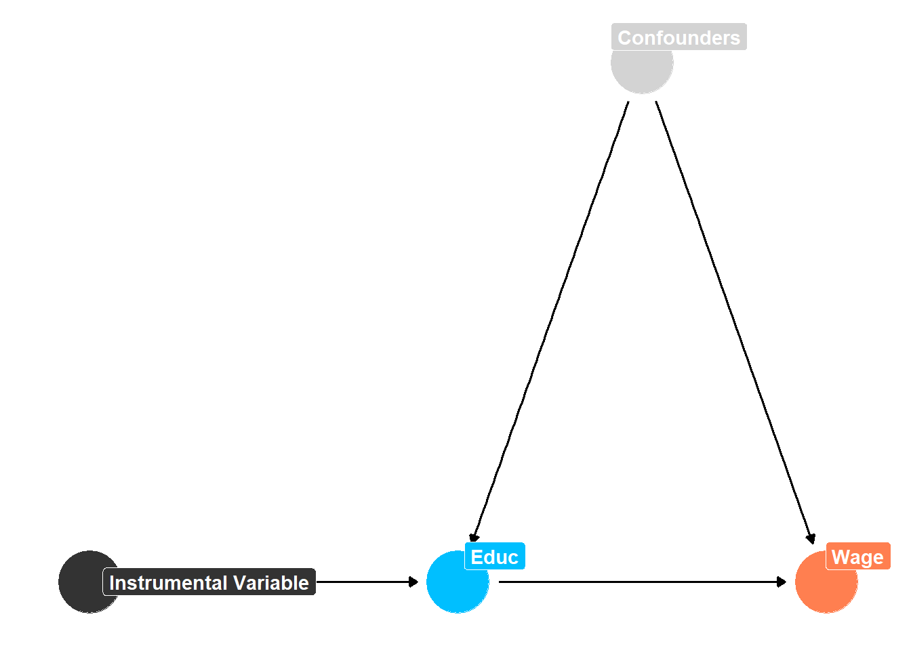

Causal Inference Practical Methods
Xinzhuo Huang ![]()
Setup
Fixed Effects
Linear Dummy Variabel Model
Fixed effects model shows that the beer tax does reduce fatalities.
Code
fatality <- import(
"E:/OneDrive - HKUST Connect/assignment/assignment3/fatality.csv",
setclass = "tibble"
)
fatality %>%
ggplot(aes(x = beertax, y = fatality_rate)) +
geom_point(aes(color = state), size = 2.3) +
geom_smooth(
aes(group = state, color = state),
method = "lm",
se = FALSE
) +
geom_smooth(method = "lm", linetype = "dashed", color = "#8E8E93") +
xlab("Beer Tax") +
ylab("Fatalities") +
ggthemes::theme_hc() +
theme(panel.grid.minor = element_blank(), legend.position = "none")
Code
linear_dummy_formula <- fatality %>%
pull(state) %>%
sprintf("`%s`", .) %>%
unique() %>%
str_c(collapse = " + ") %>%
str_c("fatality_rate ~ 0 + beertax + ", ., collapse = " + ") %>%
as.formula()
linear_dummy <- fatality %>%
pivot_wider(
names_from = state,
values_from = state
) %>%
mutate(
across(3:50, ~ str_replace(., "\\w+", "1")),
across(3:50, ~ replace_na(., "0")),
across(3:50, as.numeric)
) %>%
lm(
linear_dummy_formula,
data = .
)
linear_dummy %>%
tidy() %>%
slice(1) %>%
print_kable(title = "Linear dummy variable model")| term | estimate | std.error | statistic | p.value |
|---|---|---|---|---|
| beertax | -0.656 | 0.188 | -3.491 | 0.001 |
Fixed effect in standard packages
Code
fixed_effect_plm <- fatality %>%
pdata.frame(index = c("state")) %>%
plm(
fatality_rate ~ beertax,
data = .,
model = "within",
effect = "individual"
)
fixed_clustered_plm <- fixed_effect_plm %>%
tidy() %>%
mutate(
category = "fixed effects with plm",
`std.error` = vcovHC(
fixed_effect_plm,
type = "HC1",
cluster = "group"
) |>
diag() |>
sqrt(),
statistic = coef(fixed_effect_plm) / `std.error`,
`p.value` = 2 * pt(
abs(statistic),
df = fixed_effect_plm$df.residual,
lower.tail = FALSE
)
)
fixed_clustered_lfe <- fatality %>%
felm(
fatality_rate ~ beertax | state,
cluster = "state",
data = .
) %>%
tidy() %>%
mutate(category = "fixed effects with lfe")
fixed_clustered_lfe %>%
bind_rows(fixed_clustered_plm) %>%
print_kable(title = "Fixed effect in standard packages")| term | estimate | std.error | statistic | p.value | category |
|---|---|---|---|---|---|
| beertax | -0.656 | 0.292 | -2.247 | 0.029 | fixed effects with lfe |
| beertax | -0.656 | 0.289 | -2.271 | 0.024 | fixed effects with plm |
DiD
Pre-trends
Based on the figure, the parallel trend assumption may not hold, as we can see that the crime rates in Muslim/Jewish neighborhoods experienced two episodes of first decreasing, then increasing again, before increasing prior to the intervention. However, the Non Muslim/Jewish only experienced one episodes.
Code
cartheft <- import(
"E:/OneDrive - HKUST Connect/assignment/assignment3/cartheft.dta",
setclass = "tibble"
) %>%
mutate(treatment = if_else(distance > 0, 0, 1))
cartheft %>%
group_by(month, treatment, postattack) %>%
summarise(mean = mean(cartheft)) %>%
ggplot(
aes(x = month, y = mean)
) +
geom_line(
aes(group = treatment, color = as.factor(treatment)),
linewidth = 1.2,
linetype = "twodash"
) +
geom_vline(
xintercept = 8,
linetype = "dotdash",
linewidth = 1,
color = "#8E8E93"
) +
ggthemes::theme_hc() +
xlab("Month") +
ylab("Mean crime rates") +
theme(
legend.position = "none"
) +
geom_text(
x = 10,
y = 0.064,
label = "Muslim/Jewish",
size = 3.6,
fontface = "italic"
) +
geom_text(
x = 10,
y = 0.112,
label = "Non Muslim/Jewish",
size = 3.6,
fontface = "italic"
)
DiD as a linear regression with interaction
Code
did_interaction <- cartheft %>%
lm(
cartheft ~ treatment + postattack + treatment * postattack,
data = .
) %>%
tidy() %>%
slice(4) %>%
mutate(term = "Same-Block Police")
did_interaction %>%
print_kable(., title = "linear regression with interaction")| term | estimate | std.error | statistic | p.value |
|---|---|---|---|---|
| Same-Block Police | -0.078 | 0.027 | -2.847 | 0.004 |
DiD asd fixed effect
Code
did_fixed <- cartheft %>%
felm(
cartheft ~ treatment * postattack | blockid + month,
data = .
) %>%
tidy() %>%
slice(3) %>%
mutate(term = "Same-Block * Postattack")
did_fixed %>%
print_kable(title = "Two way fixed effect model")| term | estimate | std.error | statistic | p.value |
|---|---|---|---|---|
| Same-Block * Postattack | -0.078 | 0.026 | -2.992 | 0.003 |
Time-invariant variables in fixed effect regressions
We cannot estimate the coefficient for time-invariant variables since they are absorbed by the individual fixed effects.
Code
did_fixed_invariant <- cartheft %>%
felm(
cartheft ~ treatment * postattack + bank | blockid + month,
data = .
) %>%
tidy() %>%
slice(3:4) %>%
mutate(term = c("Bank", "Same-Block * Postattack"))
did_fixed_invariant %>%
print_kable(title = "Time-invariant variables in regression")| term | estimate | std.error | statistic | p.value |
|---|---|---|---|---|
| Bank | NaN | NA | NaN | NaN |
| Same-Block * Postattack | -0.078 | 0.026 | -2.992 | 0.003 |
Instrumental Variable
\[\begin{align*} \log(wage) = \beta_{0} + \beta_{1}educ \end{align*}\] \[\begin{align*} educ = \gamma_{0} + \gamma_{1}educ \end{align*}\]IV estimate
The IV estimator is larger than the OLS estimator. Since in this study, IV is used to address endogeneity by providing a source of variation in the predictor variable that is independent of the error term. In that case, IV estimate accounts for endogeneity and provides a more reliable estimate of the true causal effect of the predictor variable on the outcome variable. The OLS estimate, on the other hand, may be biased and inconsistent in the presence of endogeneity, leading to an underestimate of the true effect size.
Code
dag <- tribble(
~name, ~label, ~x, ~y,
"educ", "Educ", 4, 1,
"wage", "Wage", 5, 1,
"e", "Confounders", 4.5, 1.5,
"Z", "Instrumental Variable", 3, 1
)
node_labels <- dag$label
names(node_labels) <- dag$name
status_colors <- c(
exposure = "#00BFFF",
outcome = "#FF7F50",
latent = "#D3D3D3"
)
dagify(
wage ~ educ + e,
educ ~ e,
educ ~ Z,
exposure = "educ",
outcome = "wage",
latent = "e",
coords = dag,
labels = node_labels
) %>%
tidy_dagitty() %>%
node_status() %>%
ggplot(aes(x = x, y = y, xend = xend, yend = yend)) +
geom_dag_edges() +
geom_dag_point(aes(color = status)) +
geom_dag_label_repel(
aes(label = label, fill = status),
color = "white",
fontface = "bold"
) +
scale_color_manual(values = status_colors, na.value = "grey20") +
scale_fill_manual(values = status_colors, na.value = "grey20") +
guides(color = FALSE, fill = FALSE) +
theme_dag()
Code
card <- import(
"E:/OneDrive - HKUST Connect/assignment/assignment3/card.csv",
setclass = "tibble"
)
ols <- card %>%
lm(
lwage ~ educ,
data = .
) %>%
coeftest(vcovHC, "HC1") %>%
tidy() %>%
slice(2) %>%
mutate(method = "OLS with robust std.error")
iv <- card %>%
ivreg(
lwage ~ educ | nearc4,
data = .
) %>%
coeftest(vcovHC, "HC1") %>%
tidy() %>%
slice(2) %>%
mutate(method = "IV with robust std.error")
bind_rows(ols, iv) %>%
print_kable(title = "Comparison between OLS and IV")| term | estimate | std.error | statistic | p.value | method |
|---|---|---|---|---|---|
| educ | 0.052 | 0.003 | 17.902 | 0 | OLS with robust std.error |
| educ | 0.188 | 0.026 | 7.189 | 0 | IV with robust std.error |
Manual 2SLS
Code
first_stage <- card %>%
lm(
educ ~ nearc4,
data = .
)
manual <- card %>%
mutate(educ = predict(first_stage)) %>%
lm(
lwage ~ educ,
data = .
) %>%
coeftest(vcovHC, "HC1") %>%
tidy() %>%
slice(2) %>%
mutate(method = "Manual 2SLS with robust std.error")
bind_rows(manual, iv, ols) %>%
print_kable(title = "Comparison between OLS, IV and manual 2SLS")| term | estimate | std.error | statistic | p.value | method |
|---|---|---|---|---|---|
| educ | 0.188 | 0.021 | 9.149 | 0 | Manual 2SLS with robust std.error |
| educ | 0.188 | 0.026 | 7.189 | 0 | IV with robust std.error |
| educ | 0.052 | 0.003 | 17.902 | 0 | OLS with robust std.error |
Weak instrument
The F statistics from the first-stage regression is larger than 10.
Interpretation of effect
- Compliers are the individuals whose decision to attend college is influenced by the instrumental variable. In this study, compliers are the students who would attend college if they lived close to one and would not attend college if they lived far away. These students’ decisions are directly impacted by the geographical distance to college.
- Always-takers are the individuals who would attend college regardless of the geographical distance. These students would pursue higher education even if they lived far away from a college.